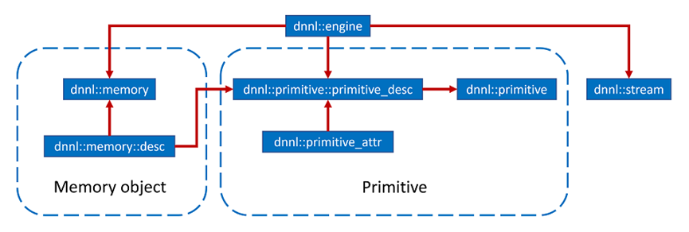
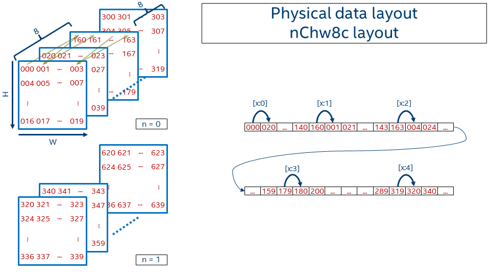

ONEDNN调研¶
支持架构：¶
英特尔架构处理器、英特尔处理器显卡和 Xe 架构显卡，实验性支持Arm* 64 （位架构 （AArch64）、OpenPOWER* Power ISA （PPC64）
CPU:¶
Intel 64/AMD64 架构
Intel Atom(R) 处理器（至少需要 Intel SSE4.1 支持）
Intel Core(TM) 处理器（至少需要 Intel SSE4.1 支持）
英特尔酷睿 Ultra 处理器（原名 Meteor Lake）
Intel Xeon(R) 处理器 E3、E5 和 E7 系列（以前称为 Sandy Bridge、Ivy Bridge、Haswell 和 Broadwell）
Intel Xeon 可扩展处理器（以前称为 Skylake、Cascade Lake、Cooper Lake、Ice Lake、Sapphire Rapids 和 Emerald Rapids）
Intel Xeon CPU Max 系列（以前称为 Sapphire Rapids HBM）
未来的英特尔至强可扩展处理器（代号 Sierra Forest 和 Granite Rapids）
AArch64 架构
Arm Neoverse(TM) N1 和 V1 处理器
GPU：¶
该库针对以下 GPU 进行了优化：
适用于第 11 至第 14 代英特尔酷睿处理器的英特尔显卡
适用于英特尔酷睿超处理器（原名 Meteor Lake）的英特尔显卡
英特尔 Iris Xe MAX 显卡（原 DG1）
英特尔 Arc(TM) 显卡（原 Alchemist）
英特尔数据中心 GPU Flex 系列（原为 Arctic Sound）
英特尔数据中心 GPU Max 系列（原 Ponte Vecchio） 其中：对Nvidia的支持是通过SYCL CUDA后端实现的，需要：
NVIDIA CUDA* 驱动程序
cuBLAS 10.1 或更高版本
cuDNN 7.6 或更高版本
计算支持：¶
| CNN 基元（卷积、内积、池化等） | | ——————————– | | RNN 原语 （LSTM， Vanilla， RNN， GRU） | | 规范化（LRN、批处理、图层） | | 元素操作（ReLU，Tanh，ELU，Abs等） | | Softmax， Sum， Concat， Shuffle | | 从优化的数据布局重新排序 | | 8 位整数、16 位、32 位和 bfloat16 浮点数据类型 | | |
核心概念¶
oneDNN的主要概念是原语，引擎，流和内存对象。

原语： 基元（dnnl::primitive）是一个封装了特定计算诸如前向卷积，向后LSTM计算，或数据变换操作的算符对象。单个原语有时可以表示更复杂的融合计算，例如一个前向卷积操作然后紧跟着一个ReLU操作。除其他事项外，融合是通过原语的属性机制来控制的。（原语和纯函数之间最重要的区别是原语可以存储状态。） 1、基元状态的一部分是不可变的。例如，卷积基元存储参数（如张量形状），并可以预先计算其他相关参数（如缓存阻塞）。这种方法允许 oneDNN 基元预先生成专门针对要执行的操作而定制的代码。oneDNN 编程模型假设执行预计算所需的时间可以通过重复使用同一基元多次执行计算来分摊。 2、在此基础上可以进行微内核扩展（低级抽象，实现顺序块级操作，允许用户通过组合这些块级计算来实现自定义操作）和图拓展（高级抽象，它允许您使用计算图而不是单个基元）引擎（dnnl::engine） 是计算设备的抽象：CPU，系统中的特定GPU卡等。创建大多数原语是为了在一个特定引擎上执行计算。唯一的例外是可在两个不同引擎之间传输数据的重排序原语。
流（dnnl::stream） 封装了绑定到特定引擎的执行上下文。例如，它们可以对应于DPC ++命令队列。
内存对象（dnnl::memory） 封装了分配给特定引擎的内存的句柄，张量维，数据类型和内存格式-张量索引映射到线性内存空间中的偏移量的方式。内存对象在执行期间被传递给原语。
数据排布支持¶
CUDA SYCL：NCDHW, NDHWC, NCHW, NHWC, NCW, NWC, NC
数据格式¶
块状布局: 为了实现更好的矢量化和缓存重用，oneDNN 引入了分块布局，将一个或多个维度拆分为固定大小的块。最流行的 oneDNN 数据格式是 AVX512+ 系统上的 nChw16c 和 SSE4.1+ 系统上的 nChw8c。从名称中可以猜出，唯一被分块的维度是通道，前者块大小为 16，后者块大小为 8。
确切的说，nChw8c 的偏移函数是：
offset_nChw8c(n, c, h, w) = n * CHW
+ (c / 8) * HW*8
+ h * W*8
+ w * 8
+ (c % 8)

一个简单的例子¶
此 C++ API 示例演示了 oneDNN 编程模型的基础知识：
· 如何创建一个DNN记忆对象。
o 如何将数据从用户缓冲区放入 oneDNN 内存对象中。
o 张量的逻辑维度和内存对象格式如何关联。
· 如何创建一个DNN原语。
· 如何执行原语。
该示例使用ReLU操作，包括以下步骤：
1. 创建引擎和流来执行原语。
2. 执行数据准备（oneDNN 之外的代码）。
创建 dnln::memory 包括两个步骤：
1. 初始化 dnnl::memory::desc 结构体（也称为内存描述符），该结构体仅描述张量数据，不包含数据本身。内存描述符用于创建 dnnl::memory 对象并初始化基元描述符（稍后在示例中显示）。
2. 基于步骤 1 中初始化的内存描述符、引擎以及可选的数据句柄创建 dnnl::memory 对象本身（也称为内存对象）。执行原语时会使用内存对象。
内存描述符
auto src_md = memory::desc(
{N, C, H, W}, // logical dims, the order is defined by a primitive
memory::data_type::f32, // tensor's data type
memory::format_tag::nhwc // memory format, NHWC in this case
);
创建内存对象
// src_mem contains a copy of image after write_to_dnnl_memory function
auto src_mem = memory(src_md, eng);
write_to_dnnl_memory(image.data(), src_mem);
// For dst_mem the library allocates buffer
auto dst_mem = memory(src_md, eng);
4. 创建 ReLU 原语。
1、创建一个操作原语描述符（此处为 dnnl::eltwise_forward::primitive_desc），它定义操作参数，并且是实现给定操作的实际算法的轻量级描述符。用户可以查询所选实现的不同特征，例如内存消耗以及下一个主题（内存格式传播）中将介绍的其他一些特征。
2、创建一个可以在内存对象上执行以计算操作的原语（此处为 dnnl::eltwise_forward）。
// ReLU primitive descriptor, which corresponds to a particular
// implementation in the library
auto relu_pd = eltwise_forward::primitive_desc(
eng, // an engine the primitive will be created for
prop_kind::forward_inference, algorithm::eltwise_relu,
src_md, // source memory descriptor for an operation to work on
src_md, // destination memory descriptor for an operation to work on
0.f, // alpha parameter means negative slope in case of ReLU
0.f // beta parameter is ignored in case of ReLU
);
// ReLU primitive
auto relu = eltwise_forward(relu_pd); // !!! this can take quite some time
5. 执行 ReLU 原语。
6. 获取结果并验证（检查生成的图像不包含负值）。
该示例围绕由卷积和池化组成的 CNN 构建，并包含以下步骤：
根据卷积原语选择的内存格式创建池化原语描述符。
为 NCHW 内存格式的输入和输出数据创建内存描述符。
// Tensor and kernel dimensions. We use the same 3x3 kernel with padding=1
// for both convolution and pooling primitives, which means that the
// activation tensor shapes do not change.
const int N = 1, H = 14, W = 14, IC = 128, OC = 256, KH = 3, KW = 3;
auto conv_src_md = memory::desc({N, IC, H, W}, memory::data_type::f32,
memory::format_tag::any // let convolution choose memory format
);
auto conv_weights_md = memory::desc(
{OC, IC, KH, KW}, memory::data_type::f32,
memory::format_tag::any // let convolution choose memory format
);
auto conv_dst_md = memory::desc({N, OC, H, W}, memory::data_type::f32,
memory::format_tag::any // let convolution choose memory format
);
const auto &pool_dst_md = conv_dst_md; // shape does not change
auto conv_pd = convolution_forward::primitive_desc(
eng, prop_kind::forward_inference, algorithm::convolution_auto,
conv_src_md, conv_weights_md,
conv_dst_md, // shape information
{1, 1}, // strides
{1, 1}, {1, 1} // left and right padding
);
auto pool_pd
= pooling_forward::primitive_desc(eng, prop_kind::forward_inference,
algorithm::pooling_max, conv_pd.dst_desc(),
pool_dst_md, // shape information
{1, 1}, {KH, KW}, // strides and kernel
{0, 0}, // dilation
{1, 1}, {1, 1} // left and right padding
);
确定输入和输出数据是否需要从优化的内存格式重新排序。
创建内存对象；以及必要的原语并执行它们。
auto conv_scratchpad_mem = memory(conv_pd.scratchpad_desc(), eng);
auto conv = convolution_forward(conv_pd);
conv.execute(s,
{{DNNL_ARG_SRC, conv_src_mem}, {DNNL_ARG_WEIGHTS, conv_weights_mem},
{DNNL_ARG_DST, conv_dst_mem}});
auto pool_scratchpad_mem = memory(pool_pd.scratchpad_desc(), eng);
auto pool = pooling_forward(pool_pd);
pool.execute(
s, {{DNNL_ARG_SRC, conv_dst_mem}, {DNNL_ARG_DST, pool_dst_mem}});
s.wait();